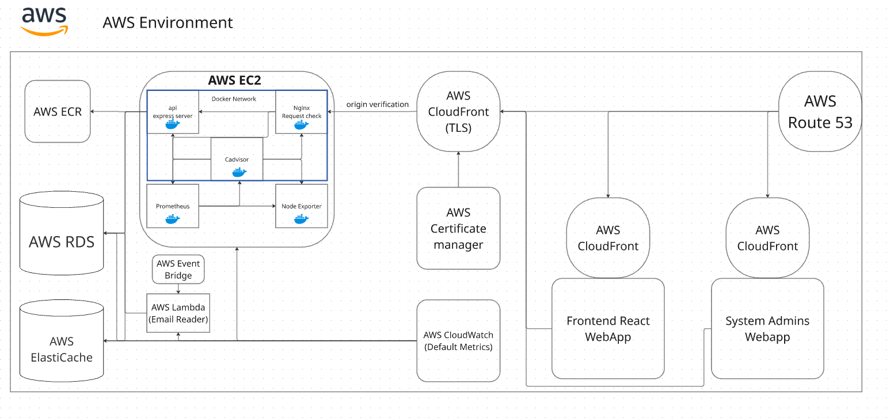
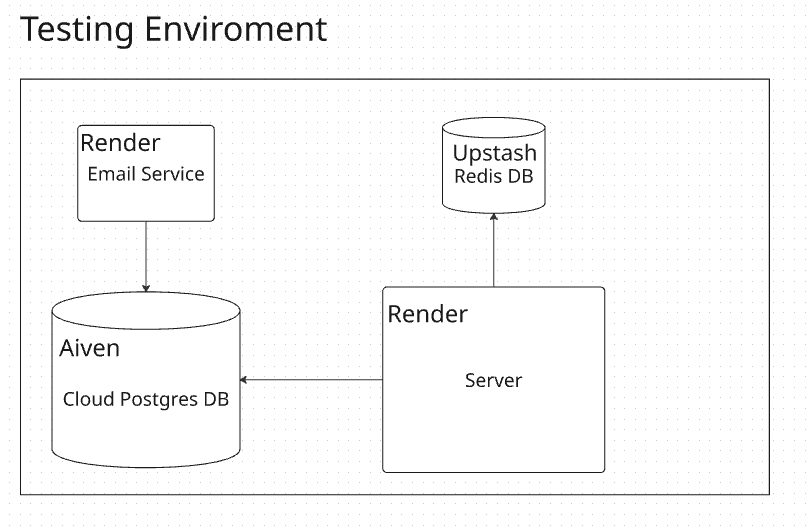
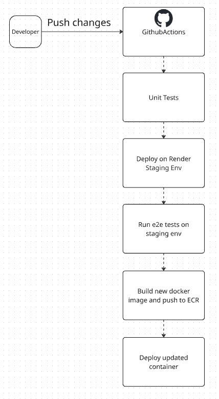

Portfolio
Experience
Junior Site Reliability Engineer (Internship)
Exness | Jun 2025 – Aug 2025
Supported the production environment of the Real User Monitoring (RUM) system:
- Created dashboards and visualizations to monitor cardinality, reducing metric volume by 20%.
- Worked on the alerting system by leveraging existing alerts, implementing new ones for broader coverage, and ensuring alerts reliably reached the team.
- Prepared the migrations from AWS ECS to AWS EKS clusters.
Intern Data Engineer
Exness | Jun 2024 – Dec 2024
I had a 7-month internship as a Data Engineer at Exness, a leading multi-asset financial broker. During my time there, I worked with various technologies, including Apache Kafka, Apache Flink, Kafka Connect, and Kubernetes:
- Enhanced the testing framework for Apache Flink SQL jobs by refining existing logic in Java to ensure reliability and implementing new features requested internally.
- Contributed to infrastructure migrations between Kubernetes clusters, using Terraform and related tools for provisioning.
- Actively managed the Apache Kafka cluster, handling resources such as topics and ACLs to meet internal requirements.
Projects
Sirius CRM
Jan 2026
Designed and implemented a production-grade backend system with separate testing and production environments. The production environment runs entirely on AWS, while the testing environment uses AWS alongside additional cloud providers.
The system is containerized and deployed on EC2, running services including a Node.js application server, Nginx, Prometheus, cAdvisor, and Node Exporter for monitoring and metrics collection. Persistent data is managed using Amazon RDS and Redis, with CloudFront providing CDN capabilities. TLS certificates are managed via AWS Certificate Manager, with custom DNS and Route 53 handling DNS routing.
Implemented JWT-based authentication with access and refresh tokens, including token revocation and rotation using Redis. Applied security best practices across the backend, including input validation, request size limits, rate limiting, and secure credential management.
Key Implementations:
- CI/CD Pipeline: Runs unit tests, deploys to test environment, executes end-to-end tests, builds container images, pushes to Amazon ECR, deploys to production EC2
- Infrastructure: EC2 with Node.js, Nginx, Prometheus, cAdvisor, Node Exporter
- Data & Storage: Amazon RDS, Redis, AWS Lambda for email processing
- Networking: CloudFront, TLS/SSL via AWS Certificate Manager, custom DNS, Route 53
- Security: Input validation, rate limiting, request size limits, secure credential management
Environment & Deployment Pictures
Production Environment
Testing Environment
CI/CD Pipeline
Cashly
May 2025
Cashly is a university project mobile app for personal finance and investments. It lets users track expenses, manage a basic stock portfolio, and sync data with Firebase Firestore.
Features:
- Daily expense logging
- Stock portfolio tracking (end-of-day prices, limited stocks)
- Firebase Authentication for user accounts
- Cloud sync with Firestore
- Offline transaction support with Room Database
Certifications

CySec Advanced
CySEC | Sept 2023
In September of 2023, I achieved a significant milestone by obtaining the CySEC Advanced Certificate. This certification represents my dedication to mastering advanced concepts in financial regulation and underscores my commitment to maintaining the high standards in the financial industry.
Certificate Number: CN8350

CCNA
CCNA | June 2022
In 2022, my dedication to networking culminated in the acquisition of both the CCNA I Introduction to Networks and CCNA I Switching, Routing, and Wireless Essentials certificates, marking key achievements in the field.The knowledge gained equips me with the skills to design, implement, and troubleshoot networks effectively. Beyond the certificates, my tech passion keeps me up-to-date with the latest in networking.